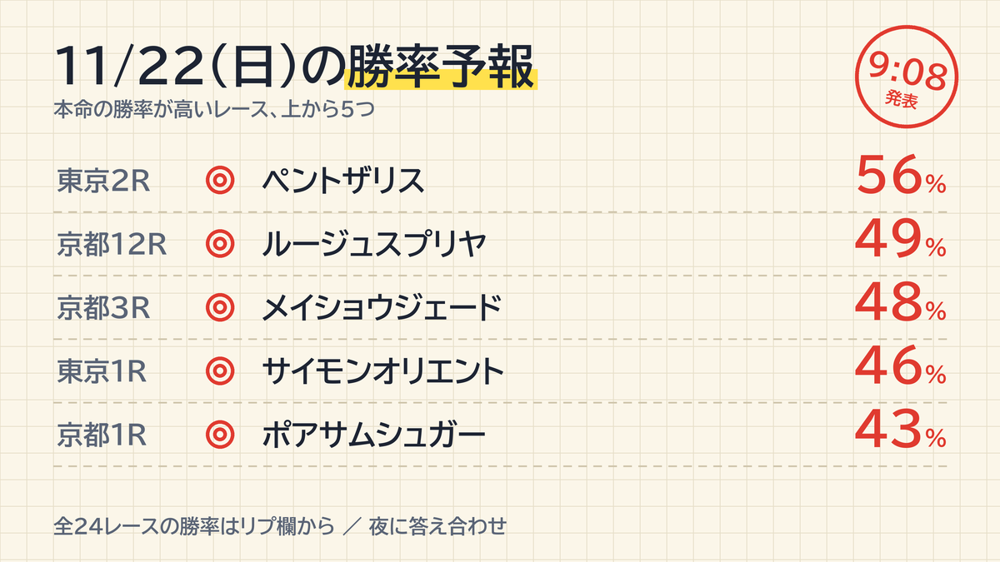

11/22の勝率予報から、本命の勝率が高いレースを抜き出したものです。全レース・全頭の勝率はこちら
競馬AIが計算した全頭の勝率を、レースが始まる前に公開しています。
当たった予報だけを後から選ぶことができないよう、 予測は発走前の時点で保存し、後から書き換えていません。
予報は、開催日の朝9時10分ごろに、その日の全レースぶんを出します。 前の日の夜にはまだありません。出たものは最新の勝率予報から見られます。
※勝率が合っていることは、儲かることを意味しません。 この予報どおりに買っても、控除率のぶん回収率は100%を下回ります。
答え合わせの数字（検証したレース数や、予報と結果のズレ）は、いまこのページに載せていません。 発走前に公開した数字だけで採点し直しているところです。まとまったら、ここに載せ直します。
「勝率30%」は、同じ予測を100回出したら30回前後勝つという意味です。 天気予報の降水確率と同じ読み方をします。